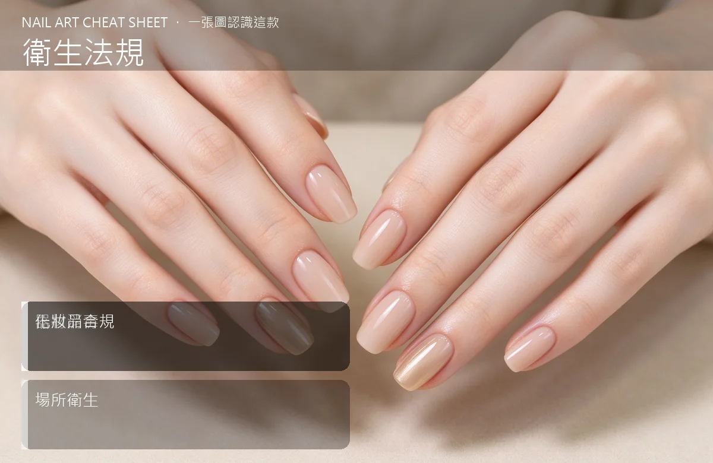

美甲衛生法規是什麼？中階入門攻略
美甲店最怕的不是沒生意，是『被稽查、被投訴、被罰錢』——消毒、化妝品、場所三塊要先搞懂。
衛生法規原理與辨識重點：美甲師不說的器材消毒
台灣對美容美甲業的規範主要落在幾塊：①化粧品（你的凝膠、指緣油）要來路清楚、不能自製分裝販售；②工具要消毒滅菌，特別是接觸皮膚和血液的工具；③營業場所要符合消防、通風、建築使用類別規定。法規看起來嚴，但核心精神就一句：別讓上一個客人的東西，透過工具傳到下一個客人身上。
誰適合做衛生法規？合法經營對號入座
剛開店、從沒接過稽查的新手；或已經開店但消毒流程跟分裝作法有點隨便的美甲師。
衛生法規美甲施作步驟：化粧品衛生管理
第一步：把『消毒 SOP』掛在牆上——金屬工具進高溫滅菌箱、拋棄式用品用完即丟、檯面酒精擦拭、自己戴手套。第二步：所有耗材買『有完整標示』的產品，不要買來路不明、分裝無標籤的膠。第三步：確認店面的使用執照、消防設備是否符合營業登記的類別。第四步：定期自己拍照記錄消毒流程，萬一被查或被投訴，你有憑有據。
衛生法規優缺點分析：美甲持久度與傷甲評估
| 優點 | 說明 |
|---|---|
| 衛生做扎實，是你最強的行銷——媽媽客、孕婦客、敏感肌客會特別信任你；也避免一次稽查罰單吃掉你好幾天的營業額。 | 是通用流派的招牌，中階就能上手 |
| 缺點 | 說明 |
| 要花錢買高溫滅菌箱、一次性用品成本也高；但這是『不能省的成本』。 | 前置與三大雷：①把凝膠分裝成小罐自己販售，這是化粧品法規的紅線；②拋棄式鋸條、銼棒重複使用；③滅菌箱只是裝飾、裡面根本沒開。這三項被查到一次，罰則和負評都很慘。沒顧好會打折 |

衛生法規新手雷區：化妝品合規與常見錯誤
注意：三大雷：①把凝膠分裝成小罐自己販售，這是化粧品法規的紅線；②拋棄式鋸條、銼棒重複使用；③滅菌箱只是裝飾、裡面根本沒開。這三項被查到一次，罰則和負評都很慘。
衛生法規和其他美甲做法的差別比較
衛生法規跟『美容證照』是兩回事。證照是『誰可以做』，法規是『做的時候要守哪些規矩』。兩個都要顧，但法規是底線——沒做好會罰錢、會被停業。
衛生法規美甲常見問題 FAQ
Q：鋸條、銼棒一定要拋棄式嗎？ A：接觸皮膚和指緣的，強烈建議拋棄式。成本不高，但衛生等級直接拉開。金屬工具才進高溫滅菌。
Q：可以自己分裝小膠送客人嗎？ A：不行。未經核准的分裝販售（或就算免費送）會觸犯化粧品衛生管理法。要送就送原裝小樣。
Q：被稽查會怎麼樣？ A：第一次通常是要求限期改善，但如果是衛生明顯不及格、或有客人投訴造成皮膚病變，會開罰單。最好主動把流程做好，不要被動挨罰。